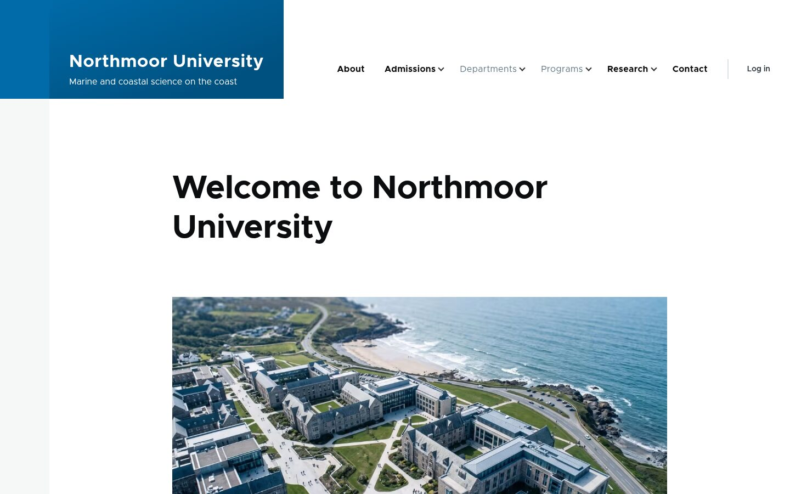

Stop 1 · The workshop
Meet Northmoor University (it doesn't exist)
The workshop was run by 1xINTERNET. We all started with the same small Drupal CMS site and added AI features to it, one step at a time.
- 4 steps, each with its own guide
- Built on the Drupal AI module, the same building blocks any Drupal site can use
- No API key needed: it uses a free trial AI provider
